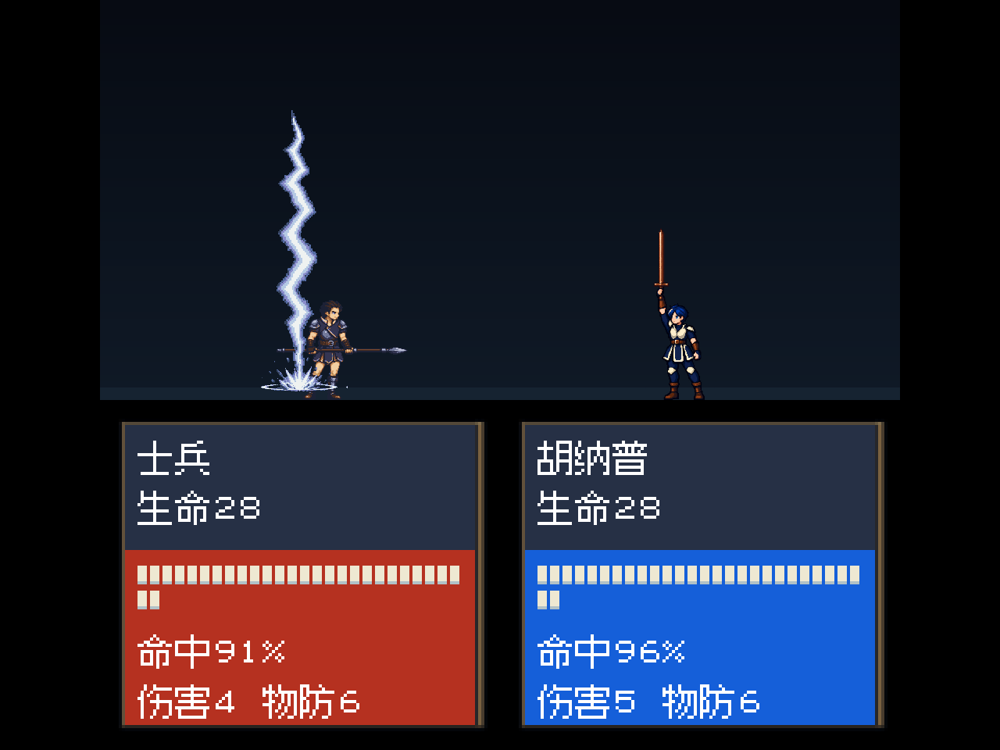
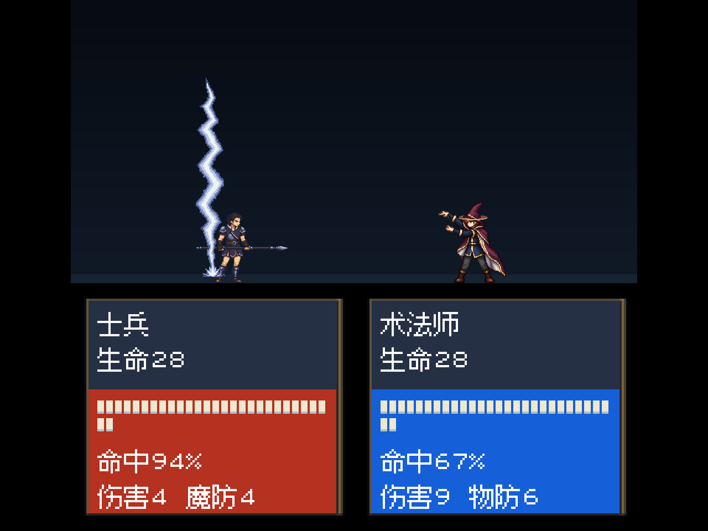
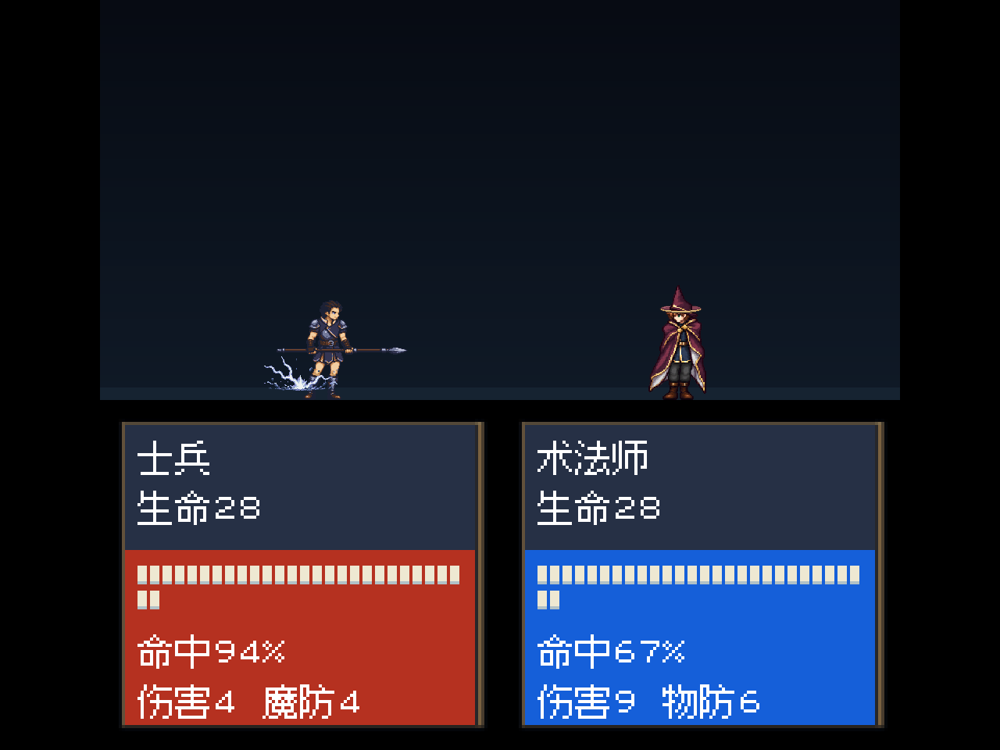
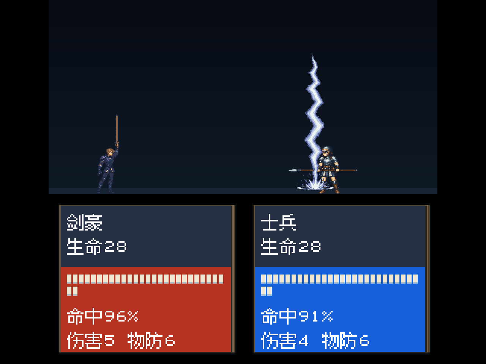

2026-10-26 · 按指定素材复用
改用全动作对照里现成的雷电
复用图中已有的灰蓝色雷电、地面冲击与分叉素材，保留配色和形状。上一批新画的细线雷电已退出运行引用，本轮没有生成或重绘雷电。
雷电法术原本已使用这套现成素材；本轮将雷电剑的备用特效也统一改为复用它，并让法术特效在普通战斗窗口内等比适配，避免超出顶部。人物动作、伤害、命中时机与音频保持。未更新iPhone。
雷电剑备用特效：同一播放帧对照



图中法术版与另一侧施放






复用范围与检查
雷电剑72种演出的504处保底引用统一更新；60条雷电法术时间线及身体素材保持。现成16张法术特效仅调整等比显示参数，未改图片颜色。落雷与地面素材按固定落地点组合，新增运行组合图320×960、6,586字节；没有另画图案或新增颜色。
资源加载、无新画雷电运行引用、非目标数据一致性检查通过，五张后台运行截图与文字安全区检查通过。截图为Godot后台渲染，非iPhone真机；本轮未执行五章完整通关。
现成素材批次：thunder-ground-impact-v1-20261024。运行继续引用已接入的actual/assets/character-art-sync-20261024/effects/，地面组合图位于actual/assets/thunder-reuse-20261026/bolt-ground.png。原始素材保留。